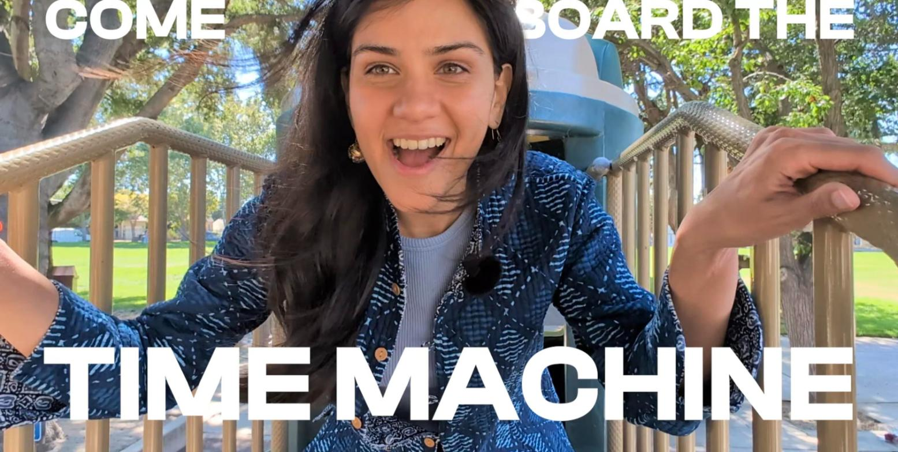

Learning and education
AI x Productive Friction
How might we learn with AI in 2045, beyond the chatbot?
Overview
AI saves effort, learning needs effort, and context decides how much to keep.

Approach
Three principles for deciding how much effort an AI learning tool keeps.
Scroll for more →
1
AI makes tasks easier
Most AI tools follow these UX principles
- Reduce memory load
- Cut steps
- Recognize, not recall
Learning science suggests some effort is needed to learn.
2
Learning takes effort
Confusion, trial, and reasoning come before understanding
Based on James Nottingham's Learning Pit and Seymour Papert's "hard fun"
3
The right setting depends on context
- TaskFinish the task, or learn from doing it?
- ExpertiseIs the learner ready for the effort, or do they need the steps first?
- StakeDoes the learner care, and is it worth the effort?
Think beyond the chatbot
The workshop asks what embodied forms AI could take in learning.
Select Elicit, Restrict, or a form of AI.
- Method
- Speculative design workshop
- Premise
- A time machine to a 2045 learning environment, adapted from Julian Bleecker
- Task
- Bring back an object, ritual, or practice that shows how AI is, or is not, part of learning
- Team
- Co-designed with Sneha Aravind

Watch the workshop on Vimeo ↗Ongoing. Results are held until publication. Get in touch